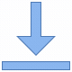

<div class="content">
  <button  style="background-color: transparent;border-radius: 10%; cursor: pointer;" mat-icon-button [matMenuTriggerFor]="menu" aria-label="Example icon-button with a menu">
    
  </button>
  <mat-menu #menu="matMenu">
    <a href="../../../assets/Maria-macedo-EN.pdf" download>
      <button mat-menu-item>
        <mat-icon>download</mat-icon>
        <span> ENGLISH CV</span>
      </button>
    </a>
    <a href="../../../assets/Maria-macedo-PT.pdf" download>
      <button mat-menu-item>
        <mat-icon>download</mat-icon>
        <span> PORTUGUESE CV</span>
      </button>
    </a>
  </mat-menu>
</div>